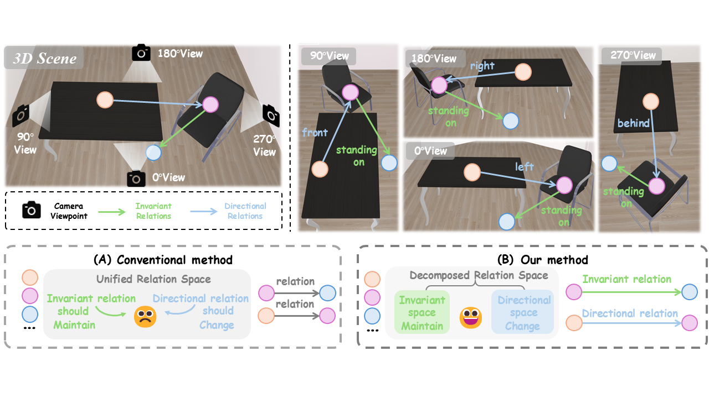
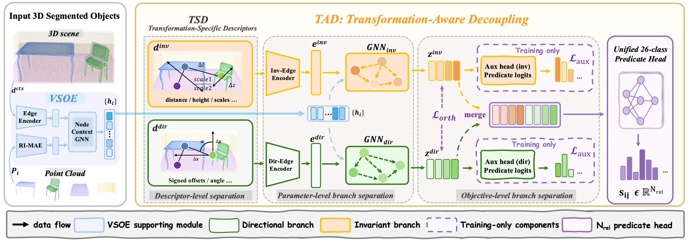
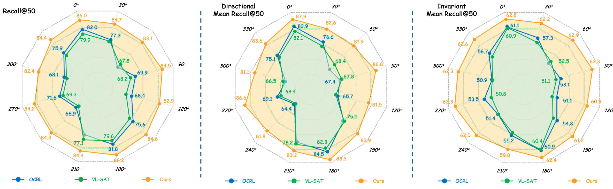

01
Viewpoint-Stable Objects
A rotation-stable object encoder provides reliable object representations for downstream relation reasoning.
AAAI 2026
MOTIVATION
Under yaw viewpoint changes, directional predicates such as left, right, front, and behind should change with the observation frame, whereas most support, contact, and semantic predicates should remain stable.

METHOD
TAD combines viewpoint-stable object representations with decoupled relation reasoning for invariant and direction-sensitive predicates.

A rotation-stable object encoder provides reliable object representations for downstream relation reasoning.
Invariant and directional predicates are processed with non-shared relation branches instead of one entangled relation space.
The two relation factors are merged to preserve the original 26-class multi-label predicate prediction setting.
DEMONSTRATIONS
Each animation pairs a continuously rotating input scene with the corresponding predicted 3D scene graph throughout the viewpoint change.
The input 3D scene rotates continuously, while the scene graph below is updated in sync with the current observation frame. The animation visualizes how predicted relations evolve as the viewing direction changes.
A second rotating scene with its graph prediction shown throughout the motion. The visualization highlights the viewpoint-dependent evolution of directional edges while retaining the overall relational structure of the scene.
RESULTS
TAD substantially reduces performance degradation under yaw viewpoint changes, without using training-time rotation augmentation.
MAIN TAKEAWAY
The model maintains high directional and invariant relation accuracy when the observation frame undergoes the challenging 90° axis exchange.
Overall R@50
86.0 → 84.5
Directional mR@50
87.9 → 86.8
Invariant mR@50
62.8 → 63.3

| Method | 0° Overall R@50 | 90° Overall R@50 | 0° → 90° Change | 90° Directional mR@50 | 90° Invariant mR@50 |
|---|---|---|---|---|---|
| VL-SAT | 79.9 | 68.2 | −11.7 | 67.8 | 51.1 |
| OCRL | 82.0 | 69.9 | −12.1 | 67.4 | 53.1 |
| TAD (Ours) | 86.0 | 84.5 | −1.5 | 86.8 | 63.3 |
PredCls evaluation with ground-truth object labels under yaw-rotated observation frames. Directional labels are transformed according to the corresponding viewpoint rotation.
CITATION
The entry below remains anonymous during review and can be updated after publication.
BibTeX
@misc{tad_3dsgg_2026,
```
title = {Not All Relations Rotate Alike:
Transformation-Aware Decoupling for
Viewpoint-Robust 3D Scene Graph Generation},
author = {Anonymous Authors},
year = {2026},
note = {Under review}
}